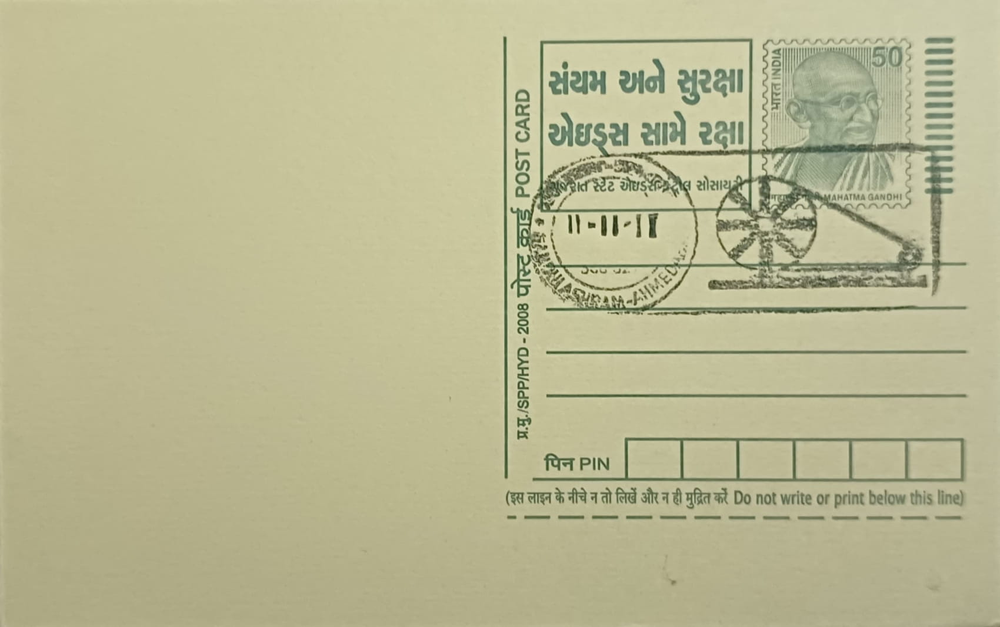

Spinning Wheel (Charakha)
રેંટિયો (ચરખો)


The charkha, the traditional Indian spinning wheel used to draw cotton fibre into yarn, is a device of ancient lineage in Indian textile craft, but its modern significance owes almost entirely to Mahatma Gandhi, who adopted it as the working emblem of India's freedom movement. Gandhi had written of the spinning wheel as a remedy for India's rural poverty as early as 1908 in Hind Swaraj, yet by his own account he had not seen an actual charkha until years later; it was only in 1917, with the help of the social worker Gangabehn Majmundar, that a working spinning wheel was traced to a household in Vijapur in the former princely state of Baroda, allowing Gandhi to begin reviving the craft at his ashram.
At its core the charkha represents something broader than a tool for making cloth: it was conceived by Gandhi as the instrument of swadeshi and self-reliance, a means by which ordinary Indians, particularly the rural poor, could produce their own cloth (khadi) and thereby reduce dependence on British textile imports. Spinning was framed not merely as an economic activity but as a disciplined, almost meditative daily practice, one Gandhi urged followers and political workers alike to undertake personally. The charkha's image was incorporated into the flag adopted by the Indian National Congress in the 1920s, well before a stylised wheel, the Ashoka Chakra, replaced it on the flag of independent India in 1947, underscoring how closely the device had become identified with the national struggle itself.
Gandhi's own practice of spinning was centred at his ashrams, first at Kochrab and then, from 1917, at Sabarmati Ashram on the banks of the Sabarmati river in Ahmedabad, where he lived for over a decade and made spinning a daily communal discipline among ashram residents. To organise and standardise the craft nationally, Gandhi founded the All India Spinners' Association (Akhil Bharat Charkha Sangh) in September 1925, an institution tasked with training spinners, improving charkha design, and marketing khadi cloth; under its efforts the number of charkhas in regular use reportedly grew into the tens of thousands within a few years of the association's founding. Gandhi also championed a compact, portable folding charkha, suited to travel and public demonstration, which he used and promoted particularly after the 1921 non-cooperation movement's call to boycott foreign cloth.
A particularly notable moment in the charkha's public life came in the early 1920s, when Gandhi began spinning publicly as a visible, repeatable act of civil protest, turning what might have been a private domestic chore into mass political theatre performed at rallies and in prison alike. The practice was taken up widely enough that wearing and producing khadi became an identifying mark of participation in the nationalist cause, and charkhas used personally by Gandhi have since become prized historical artefacts, with examples changing hands at international auctions for substantial sums and others held in museum collections abroad as well as in India.
Today, several charkhas associated with Gandhi's own use remain preserved and on public display at Sabarmati Ashram in Ahmedabad, now maintained by the Sabarmati Ashram Preservation and Memorial Trust, which also operates the Gandhi Heritage Portal documenting the ashram's archives and the records of bodies such as the All India Spinners' Association. The ashram, located near the Gandhi Ashram post office in Ahmedabad district, functions as a memorial and research site visited by scholars, students, and tourists tracing the practical history of the independence movement rather than only its political milestones.
| Date of Introduction | January 30, 1995 |
|---|---|
| Address | Sub Postmaster, |
| Gandhi Ashram SO, | |
| Ahmedabad (dt.), Gujarat - 380027. |